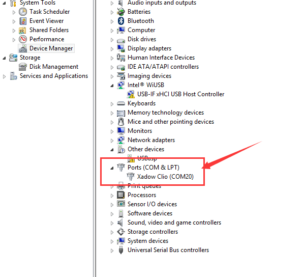
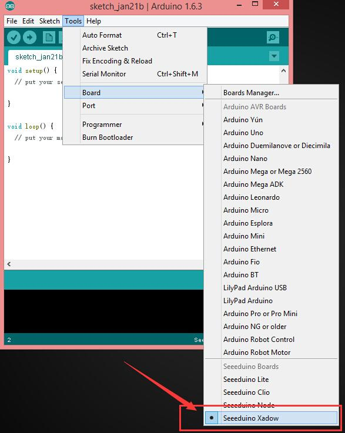
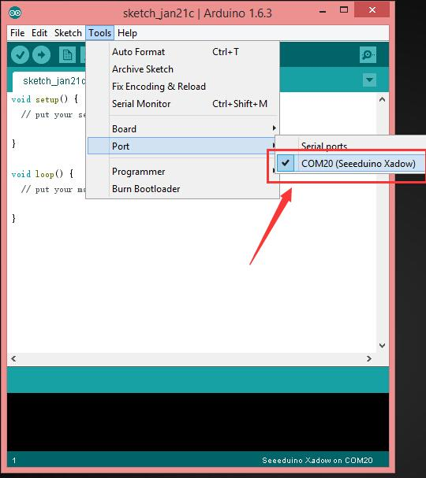

The Xadow Duino is specially designed for building up awesome Lighting Devices using the most popular RGB LED WS2812B. Based on the MCU ATmega32u4 and the built-in micro USB, Xadow Duino allows you to either control the RGB LEDs directly from the software in RePhone Kit Create or program the board with Arduino IDE to make it work dependently. Unlike any other add-on modules, this board also has its own battery socket (JST1.0 type), so you can power it in many ways:

| Microcontroller | ATmega32u4 |
| Power Supply | 5V via USB, current draw is 1.5A at Max
3.3 ~ 4.2V via battery socket, current draw is 1.5A at Max 3.3 ~ 6V via breakout pins, current draw is 500 mA at Max 3.3 ~ 4.2 V via Xadow GSM+BLE, current draw is 500 mA at Max |
| Charging Current | 500 mA |
| Flash Memory | 32 KB (ATmega32u4) of which 4 KB used by bootloader |
| SRAM | 2.5 KB (ATmega32u4) |
| EEPROM | 1 KB (ATmega32u4) |
| Clock Speed | 16 MHz |
| Connector | 2 × 11 PIN Xadow Connector
Bonding pads for RGB LED WS2812b |
| Interfaces | Interface with Xadow GSM+BLE through
I2C (7-bit address 0x23) |
| Dimensions | 25.37mm × 20.30mm / 1”× 0.8” |
The image below illustrates the Pin Definitions of 11 Pin Xadow Connector, Solder-able Breakout Pins on the Xadow Duino.
The easiest way to control the WS2812B is to use the built-in software in 'RePhone Kit Create', which provides an 'Actuator Control' application that allows you to light up the WS2812B in three different ways: 1. Monochrome, 2 Marquee, 3. Rainbow
In the ‘If This Then That’ you can set different conditions to trigger the Xadow Duino to light up the WS2812B in a specified mode.
You can also do some coding with the Arduino IDE to customize your light sources.
To use Xadow Duino with Arduino IDE, there are few simple steps you would need to follow:
1. Download the driver files
2. Please refer to the Download Arduino and install Arduino driver page to install the driver correctly
After you correctly installed the driver,
Open Device Manager by clicking the Start button, clicking Control Panel, clicking System and Security, and then, under System, clicking Device Manager. If you're prompted for an administrator password or confirmation, type the password or provide confirmation. Now you should be able to see the COM ports on your ‘Device Manager’ as：

3. Now download the Xadow File Names
, unzip it and locate to ...\Files_For_Seeed_Main_Board-master.7z\Files_For_Seeed_Main_Board-master\v1.6.3\seeeduino\, copy the folder named seeeduino into the ...\arduino-1.6.6\hardware\ where you've installed your Arduino IDE. The version of Arduino IDE might be different, here I used Arudino IDE 1.6.6
4. Now lets try to light up some LEDs, connect your Xadow Duino to computer with a micro USB, open Arduino IDE, select Tools ==> Board ==> Seeeduino Xadow:

then select the Port as COM20(Seeeduino Xadow) :

5. Copy the following code, if you don't have the WS2812b libraries, download it here:
#include <Adafruit_NeoPixel.h> #define PIN 5 //the Xadow Duino used DIN/D5/PC6 to control the WS2812b // Parameter 1 = number of pixels in strip // Parameter 2 = pin number (most are valid) // Parameter 3 = pixel type flags, add together as needed: // NEO_RGB Pixels are wired for RGB bitstream // NEO_GRB Pixels are wired for GRB bitstream // NEO_KHZ400 400 KHz bitstream (e.g. FLORA pixels) // NEO_KHZ800 800 KHz bitstream (e.g. High Density LED strip) Adafruit_NeoPixel strip = Adafruit_NeoPixel(60, PIN, NEO_GRB + NEO_KHZ800); void setup() { strip.begin(); strip.show(); // Initialize all pixels to 'off' // it is very important to set D13 as OUTPUT & HIGH as we want it to act as 'GND' pinMode(13,OUTPUT); digitalWrite(13,HIGH); } void loop() { // Some example procedures showing how to display to the pixels: colorWipe(strip.Color(255, 0, 0), 50); // Red colorWipe(strip.Color(0, 255, 0), 50); // Green colorWipe(strip.Color(0, 0, 255), 50); // Blue rainbow(20); rainbowCycle(20); } // Fill the dots one after the other with a color void colorWipe(uint32_t c, uint8_t wait) { for(uint16_t i=0; i<strip.numPixels(); i++) { strip.setPixelColor(i, c); strip.show(); delay(wait); } } void rainbow(uint8_t wait) { uint16_t i, j; for(j=0; j<256; j++) { for(i=0; i<strip.numPixels(); i++) { strip.setPixelColor(i, Wheel((i+j) & 255)); } strip.show(); delay(wait); } } // Slightly different, this makes the rainbow equally distributed throughout void rainbowCycle(uint8_t wait) { uint16_t i, j; for(j=0; j<256*5; j++) { // 5 cycles of all colors on wheel for(i=0; i< strip.numPixels(); i++) { strip.setPixelColor(i, Wheel(((i * 256 / strip.numPixels()) + j) & 255)); } strip.show(); delay(wait); } } // Input a value 0 to 255 to get a color value. // The colours are a transition r - g - b - back to r. uint32_t Wheel(byte WheelPos) { if(WheelPos < 85) { return strip.Color(WheelPos * 3, 255 - WheelPos * 3, 0); } else if(WheelPos < 170) { WheelPos -= 85; return strip.Color(255 - WheelPos * 3, 0, WheelPos * 3); } else { WheelPos -= 170; return strip.Color(0, WheelPos * 3, 255 - WheelPos * 3); } }
There are many good projects on the internet, wondering how other people DIY cool lighting stuff?
Check it out:

We’ve been looking for a better place where our backers (RePhone Users) can sit together, warmly and comfortably, have conversations about RePhone, discuss technical problems, share ideas/projects, and give feedback on the modules’ development in the future. And then here we go, the RePhone Community.
Now join us in the RePhone Community! Together we seek answers, make interesting stuff, care about each other, and share our experiences.
Some frequently asked questions in RePhone Community are collected and answered to the topic "Frequently Asked Questions of RePhone (FAQ)" , the topic will be kept updating whenever a new FAQ comes out.
We will be keep updating the source code on our github page:
The schematic diagram of Xadow Duino is provided in the following link:
Check more info about the fascinating RGB LED WS2812B: